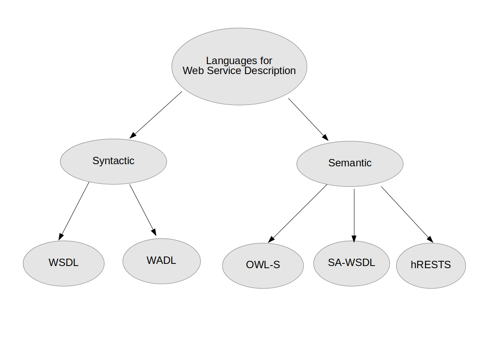

Datalog Access to Real-World Web Services
John Samuel1, Christophe Rey2
1. CPE Lyon
2. LIMOS, University Clermont-Auvergne
UNILOG 2018, Vichy, 25th June, 2018

- Web Services
- Numerous
- Heterogeneous
- Autonomous
- Evolving
- Question:
- How to integrate with these web services with minimum manual effort?
- Methodology:
- Declarative Programming especially using datalog
1. Understanding Web Services
- Interfaces
- Web application: Manual consumption using internet browsers
- Application programming interface (API): Machine consumption
- API Operation parameters
- Operation order
- Communication protocol
Understanding Web Services
- Resource names
- Tasks vs Todos
- Updates vs Tweets
- Message Formats
- Architectural style
Understanding Web Services
- Service Level Agreements
- N number of API calls per second
- N number of API calls from a single IP address
- Access blocked after limit crosses N calls
- Authentication and Authorization
- Basic HTTP authentication (user name, password)
- Open authentication (OAuth)
- Custom authentication (e.g., special URLs, generation of keys)
- Web Services: Numerous
- Social Media
- News
- Marketing
- Project Management
- Professional Networking
- Accounting
- Human Resource Management
- Web Services: Autonomous
- Shift from self-controlled database systems to third-party
managed database systems
- Users cannot modify database schema
- Users cannot modify API
- Web service: Evolution
- Change in message formats
- Change in operations
- Change in SLA (service level agreements)
- Change in authentication/authorization
- Web Services: Focus
- Communication protocol: HTTP
- Operations: Data providing operations
- Message formats: XML, JSON
- Authentication: Basic HTTP, OAuth
- RESTful/REST like web services
- Integration with one web Service
- Manually developed programs using API
- Integration with one web Service: Current workflow
- Read Web service API documentation
- Understand business requirements
- Decide relevant operations
- Write program using procedural languages (e.g., Java, PHP)
- Problem: Not scalable for a large number of web services
- Integration with multiple web services: automated solution
- Machine readable documentation for API
- Syntax: WSDL and WADL
- Syntax and Semantics: SAWSDL, OWL-S
- Autogenerated codes
- Integration with multiple web services: automated solution

- Integration with Web Services: automated solution
- There still exists web services having only human-readable API documentation
- Manual effort is therefore still required
- Question: Is it possible to reduce this manual effort?
2. Solution: Data Integration
- Data integration
- Provides uniform query interface over heterogeneous, autonomous data sources
- More than two decades of research
- Initially proposed for legacy databases
- Our proposition:
- Consider data providing API operations as database relations
- Use mediation approach of data integration for querying web services
Mediation Approach
- Global Schema
- Set of relations with attributes
- End user exposed to global schema relations
- Hides underlying heterogeneity of data sources
- Local Schema:
- Relations of individual data sources/databases
Mediation Approach
- Mapping
- Mapping required between local and global schema
- Mapping approaches:
- GAV (Global as view): Global schema is defined using local schema relations
- LAV (Local as view): Local schema is defined using global schema relations
- GLAV (Global-Local as view)
Mediation Approach
- Languages used for Mapping
- Conjunctive query
- Union of conjunctive query
- Datalog query
- Advantages
- Declarative languages (Focus on what and not on how)
- Similar to SELECT-PROJECT-JOIN (SPJ) SQL queries
Query rewriting
- Definition
- Translation of queries formulated over the global schema to local schema relations
- Algorithms
- Bucket algorithm
- Minicon algorithm
- Inverse-rules algorithm
Mediation approach in case of Web Services
- Global Schema
- Created after understanding business requirements
- Local Schema
- Every data providing API operation is considered as a local schema relation with access pattern
- Mapping
- Local and global schema relations must be mapped manually
- Query rewriting
- Queries over global schema must be translated to API operation calls
Mediation approach in case of Web Services: Query Evaluation
- Datalog Engine
- Evaluation of query generated by query rewriting algorithm
- Wrapper:
- Web service API response (in XML, JSON etc.) transformed to format understood by datalog engine (e.g., facts)
Mediation approach in case of Web Services: Wrapper
- Response Validation
- Validating schema of obtained response
- Declarative languages like XSD, JSON-schema
- Response Transformation:
- Transformed obtained response to a desired format
- Declarative languages like XSLT, JSONT
Implementation
- Mapping
- LAV mapping using conjunctive queries
- Queries on global schema:
- Generic Web Service API wrapper:
- Response validation and transformation
- XSD and XSLT
- Datalog Engine:
- Modified IRIS integrated with generic wrapper
Use cases
- Feeding a data warehouse (data analysis)
- Integrated dashboard
- Web mashups
4. Future Works
- Limitations and future works
- Incomplete information
- Optimizing number of API operation calls
- Handling errors
- Handling optional input parameters
- Handling heterogeneous SLA
5. Conclusion
- Web Services
- Growing use of specialized web services
- Personal and professional use
- Integrated solutions
- Need for solutions providing a global overview
- Mediation approach as a partially automated solution
- Fully automated solution
- Semantic web languages for describing syntax and semantics
- Use of linked open data
References
- Duschka, O.M., Genesereth, M.R., Levy, A.Y.: Recursive query plans for data integration. J. Log. Program. 43(1), 49–73 (2000)
- Espinha, T., Zaidman, A., Gross, H.: Web API growing pains: Loosely coupled yet strongly tied. Journal of Systems and Software 100, 27–43 (2015)
- Fielding, R.T.: Architectural styles and the design of network-based software architectures (2000)
- Grahne, G., Kiricenko, V.: Towards an algebraic theory of information integration. Inf. Comput. 194(2), 79–100 (2004)
- Halevy, A.Y.: Theory of answering queries using views. SIGMOD Record 29(4), 40–47 (2000)
- Halevy, A.Y.: Answering queries using views: A survey. The VLDB Journal 10(4), 270–294 (Dec 2001)
- Samuel, J.: Feeding a data warehouse with data coming from web services. A mediation approach for the DaWeS prototype. Ph.D. thesis, Blaise Pascal University, Clermont-Ferrand, France (2014)
- Samuel, J.: Towards a data warehouse fed with web services. In: Presutti, V., d’Amato, C., Gandon, F., d’Aquin, M., Staab, S., Tordai, A. (eds.) ESWC PhD Symposium. Lecture Notes in Computer Science, vol. 8465, pp. 874–884. Springer (2014)
- Samuel, J., Rey, C.: Dawes: Data warehouse fed with web services. In: INFORSID (2014)
- Samuel, J., Rey, C.: Generic web service wrapper for mediation based data warehousing. In: Akerkar, R., Plantié, M., Ranwez, S., Harispe, S., Lau- rent, A., Bellot, P., Montmain, J., Trousset, F. (eds.) Proceedings of the 6th International Conference on Web Intelligence, Mining and Semantics, WIMS 2016, Nı̂mes, France, June 13-15, 2016. pp. 34:1–34:4. ACM (2016)
- Ullman, J.: Information integration using logical views. Theoretical Computer Science 239(2), 189–210 (2000)